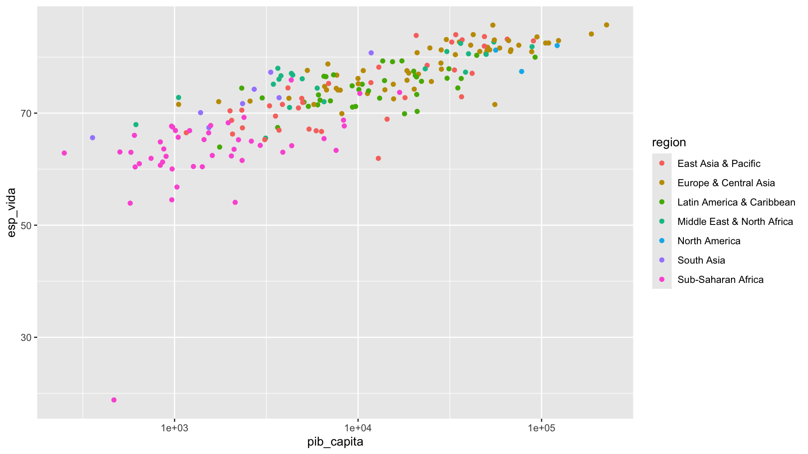

library(ggplot2)Sesión 3: Visualización de datos con ggplot2
Objetivo de la sesión de hoy
Dominar la lógica de la gramática de gráficos implementada en ggplot2. Construir gráficos claros, funcionales y personalizables para la exploración de variables numéricas y categóricas. Componer visualizaciones múltiples y utilizar recursos de diseño.
Poder visualizar la información no solo nos ayuda a a anticipar ciertos patrones y comportamientos, sino que también facilita la comunicación de estos hallazgos a otros. Es importante reconocer que tendemos a dejarnos llevar más por los gráficos que por los resúmenes numéricos, aunque ambos sean igualmente importantes.
Principios de ggplot2
ggplot2 es uno de los paquetes más populares y poderosos en R para la creación de gráficos.
La creación de gráficos con ggplot2 se basa en la gramática de los gráficos (Grammar of Graphics). Esta gramática define una serie de componentes que forman parte de un gráfico:
- Datos: El conjunto de datos que queremos visualizar.
- Estética: La asignación de variables a aspectos visuales del gráfico, como posición, color, tamaño, etc.
- Geometría: El tipo de gráfico (barras, puntos, líneas, etc.).
- Facetas: Subdivisiones del gráfico en múltiples paneles basados en una o más variables.
- Estadísticas: Transformaciones estadísticas que se aplican a los datos antes de graficarlos.
- Coordenadas: El sistema de coordenadas usado (cartesiano, polar, etc.).
- Tema: Elementos de diseño y formato del gráfico.
Piensa en cada uno de ellos como una capa que va encima. Para construir un gráfico en ggplot2, concatenamos diferentes capas usando el operador +. Cada capa añade un nuevo componente al gráfico.
df = WDI::WDI(
country = "all",
indicator = c(
pib_capita = "NY.GDP.PCAP.CD",
esp_vida = "SP.DYN.LE00.IN",
poblacion = "SP.POP.TOTL"
),
start = 2014, end = 2024, extra = T
)library(dplyr)
df_22 = df %>%
filter(region != "Aggregates", year == 2022) %>%
select(-year)Vamos a empezar con un gráfico de dispersión básico utilizando el conjunto de datos df_22. Este conjunto contiene datos sobre el Producto Interno Bruto (PIB) per cápita, la esperanza de vida y otros indicadores para varios países a lo largo del tiempo.
Empezamos agregando la primera capa, los datos. Para comenzar, creamos la base del gráfico con la función ggplot(), y como argumento el conjunto de datos df_22.
ggplot(df_22)Como ves, los datos por sí solos únicamente nos dan un recuadro en blanco; debemos añadir el resto de capas. Definimos las estéticas del gráfico con la función aes(), asignando el PIB per cápita al eje x (pib_capita) y la esperanza de vida al eje y (esp_vida).
ggplot(df_22, aes(x = pib_capita, y = esp_vida))Ahora que R sabe qué datos vamos a utilizar y qué variables tomar como coordenadas, necesitamos especificar qué tipo de gráfico queremos crear. En ggplot2, hay muchas geoms (geometrías), y cada una proporciona un tipo de visualización distinta. Por ejemplo, geom_bar crea un gráfico de barras y geom_line genera uno de líneas.
En nuestro caso, como ambas variables (el PIB per cápita y la esperanza de vida) son numéricas, lo ideal es usar un gráfico de dispersión. Este tipo de visualización nos permite explorar visualmente si existe algún tipo de relación entre ambas.
Para crear este gráfico, usamos la función geom_point():
ggplot(df_22, aes(x = pib_capita, y = esp_vida)) +
geom_point()En este ejemplo, aes(x = pib_capita, y = esp_vida) define la estética del gráfico, es decir, qué variable irá en cada eje. Luego, geom_point() le indica a R que queremos un gráfico de puntos (dispersión).
Una vez que ejecutamos este código, ya podemos empezar a observar patrones generales en los datos. Sin embargo, probablemente notes que los puntos están bastante agrupados hacia la izquierda del gráfico. Esto ocurre porque el rango del PIB per cápita varía mucho entre países: algunos tienen valores muy altos y otros muy bajos, lo que comprime los datos en un extremo del eje.
Para mejorar la visualización, podemos transformar la escala del eje x utilizando una escala logarítmica. Esto nos permite “expandir” las diferencias entre países con bajo PIB y comprimir un poco los valores más altos, facilitando así la comparación visual.
Usamos scale_x_log10() para transformar el eje x a una escala logarítmica.
ggplot(df_22, aes(x = pib_capita, y = esp_vida)) +
geom_point() +
scale_x_log10()Solo recuerda: aplicar una escala logarítmica cambia la forma en que leemos los datos. No estamos viendo el valor bruto del PIB per cápita, sino su logaritmo. Aun así, esta transformación es muy útil para interpretar mejor patrones cuando hay mucha dispersión entre valores bajos y altos.
También podemos incluir una dimensión adicional de información visual usando la región de cada país como color. Para hacerlo, dentro de aes() agregamos el argumento color = region, lo que permite que cada punto se coloree según la región correspondiente.
ggplot(df_22, aes(x = pib_capita,
y = esp_vida,
color = region)) +
geom_point() +
scale_x_log10()
Esto permite explorar visualmente si ciertos patrones se agrupan por región. Por ejemplo, si hay regiones donde los países tienen una esperanza de vida similar a pesar de tener diferentes niveles de ingreso.
Para que el gráfico sea más claro, añadimos etiquetas con labs(). Esto incluye un título para el gráfico, nombres para los ejes y una leyenda para el color.
ggplot(df_22, aes(x = pib_capita,
y = esp_vida,
color = region)) +
geom_point() +
scale_x_log10() +
labs(title = "Relación entre PIB per cápita y Esperanza de Vida",
x = "PIB per cápita (escala logarítmica)",
y = "Esperanza de Vida",
color = "Región")
Con esto obtenemos un gráfico claro, donde cada capa cumple una función específica: geom_point()dibuja los puntos, scale_x_log10() transforma el eje x, color = region añade una variable categórica como color, y labs() da contexto e interpretación.
Otra capa opcional que podemos agregar es facet_wrap(). El facetado permite dividir el gráfico en paneles separados según una variable categórica. En este caso, podemos crear un gráfico por cada región.
Usamos facet_wrap(~ region) para crear un panel por región. Esto facilita comparar patrones dentro y entre regiones.
ggplot(df_22, aes(x = pib_capita,
y = esp_vida,
color = region)) +
geom_point() +
scale_x_log10() +
labs(title = "Relación entre PIB per cápita y Esperanza de Vida",
x = "PIB per cápita (escala logarítmica)",
y = "Esperanza de Vida",
color = "Región") +
facet_wrap(~ region) +
theme(legend.position = "none") # Esta línea oculta la leyendaAl usar facet_wrap(), cada gráfico mantiene la misma escala, pero muestra solo los países de una región. Esto permite observar variaciones internas que podrían quedar ocultas en un gráfico global.
La última capa que veremos es la de theme(). Esta capa permite modificar con precisión la apariencia del gráfico: tamaños, posiciones, colores, fuentes, márgenes, etc. Por ejemplo, en el gráfico anterior eliminamos la leyenda usando un theme(legend.position = "none").
ggplot2 tiene varios temas predeterminados que permiten cambiar la apariencia del gráfico sin complicarse demasiado. No exploraremos toda la personalización posible, sino solo algunos de los themes básicos.
¿Recuerdas el gráfico que generamos antes del facet? Podemos usarlo nuevamente. No hace falta reescribirlo completo: los gráficos también son objetos en R, por lo que se pueden guardar en una variable.
grafico = ggplot(df_22, aes(x = pib_capita, y = esp_vida,
color = region)) +
geom_point() +
scale_x_log10() +
labs(title = "Relación entre PIB per cápita y Esperanza de Vida",
x = "PIB per cápita (escala logarítmica)",
y = "Esperanza de Vida",
color = "Región")Para mostrarlo, solo hay que llamarlo:
grafico
Y ahora, simplemente podemos sumarle una capa theme:
theme_minimal() crea un gráfico con fondo blanco y cuadrícula ligera:
grafico + theme_minimal()
theme_gray() es el tema por defecto de ggplot2: fondo gris claro y cuadrícula blanca.
grafico + theme_gray()theme_bw() tiene fondo blanco y líneas más marcadas. Es útil si se imprimirá el gráfico en blanco y negro.
grafico + theme_bw()theme_classic() imita el estilo clásico de los gráficos base de R.
grafico + theme_classic()theme_void() elimina todos los elementos del gráfico, dejando solo los datos.
grafico + theme_void()theme_dark() aplica un fondo oscuro con líneas claras.
grafico + theme_dark()Todos estos temas pueden ser personalizados si necesitas ajustes más detallados. En esta sesión usaremos theme_minimal() por preferencia, pero puedes elegir el que mejor se adapte a tu estilo o propósito.
Gráficos para variables continuas
Histograma
El histograma permite observar la distribución de una variable numérica. Por ejemplo, ¿cómo están distribuidos los valores de esperanza de vida?
ggplot(df_22, aes(x = esp_vida)) +
geom_histogram(binwidth = 5, fill = "skyblue", color = "black") +
labs(title = "Distribución de la esperanza de vida",
x = "Esperanza de vida",
y = "Frecuencia") +
theme_minimal()Gráfico de líneas
Un gráfico de líneas es útil para ver cómo cambia una variable a lo largo del tiempo. Si tuvieras datos de varios años, podrías agrupar por año.
Podemos combinar dplyr con ggplot2 utilizando el operador pipe (%>%) para encadenar directamente una transformación de datos con una visualización. Esto nos permite filtrar, agrupar o resumir datos con dplyr, y luego pasar el resultado directamente a ggplot() para graficarlo, sin necesidad de guardar objetos intermedios.
df %>%
filter(region != "Aggregates") %>%
group_by(year, region) %>%
reframe(esp_vida_media = mean(esp_vida, na.rm = TRUE)) %>%
ggplot(aes(x = year, y = esp_vida_media, color = region)) +
geom_line(size = 1) +
labs(title = "Evolución de la esperanza de vida por región",
x = "Año",
y = "Esperanza de vida (promedio)",
color = "Región") +
theme_minimal() +
theme(legend.position = "top")Boxplot
Un boxplot muestra cómo se distribuye una variable numérica en distintas categorías. Por ejemplo, la distribución de la esperanza de vida según región:
df_22 %>%
ggplot(aes(x = region, y = esp_vida, fill = region)) +
geom_boxplot() +
labs(title = "Distribución de la esperanza de vida por región",
x = "Región",
y = "Esperanza de vida") +
theme_minimal() +
theme(legend.position = "none")Gráficos para variables categóricas
Gráfico de barras
Permite ver la frecuencia de cada categoría en barras
df_22 %>%
ggplot(aes(x = region, fill = region)) +
geom_bar() +
labs(
title = "Frecuencia de observaciones por región",
x = "Región",
y = "Frecuencia"
) +
theme_minimal() +
theme(legend.position = "none") +
coord_flip()Gráfico de barras con valores agregados
Si ya tienes una tabla resumida con frecuencias, o quieres mostrar un valor calculado como la esperanza de vida promedio por región, usamos geom_col(). También podemos usar reorder() para ordenar las barras de menor a mayor vida promedio.
df_22 %>%
group_by(region) %>%
reframe(vida_media = mean(esp_vida, na.rm = TRUE)) %>%
ggplot(aes(x = reorder(region, vida_media),
y = vida_media, fill = region)) +
geom_col() +
labs(title = "Esperanza de vida promedio en 2022",
x = "Región",
y = "Esperanza de vida") +
theme_minimal() +
theme(legend.position = "none") +
coord_flip()Gráfico de proporciones
También podemos visualizar proporciones relativas entre categorías. Por ejemplo, la proporción de países por tipo de ingreso en cada región. position = "fill" transforma las barras en proporciones relativas
df_22 %>%
ggplot(aes(x = region, fill = income)) +
geom_bar(position = "fill") +
labs(title = "Distribución proporcional de ingresos por región",
x = "Región",
y = "Proporción",
fill = "Tipo de ingreso") +
theme_minimal() +
scale_y_continuous(labels = scales::percent)df_22$income no tiene un orden factorizado, ggplot2 lo tratará como categorías sin orden, lo cual puede resultar en un orden de los niveles arbitrario. Podemos ordenar explícitamente los niveles de income usando forcats::fct_relevel(). En este caso, estamos trabajando con categorías como:
Low income
Lower middle income
Upper middle income
High income
Factorizamos y establecemos orden entre los niveles:
df_22 <- df_22 %>%
filter(income != "Not classified") %>%
mutate(income = forcats::fct_relevel(income,
"Low income",
"Lower middle income",
"Upper middle income",
"High income"))df_22 %>%
ggplot(aes(x = region, fill = income)) +
geom_bar(position = "fill") +
labs(title = "Distribución proporcional de ingresos por región",
x = "Región",
y = "Proporción",
fill = "Tipo de ingreso") +
theme_minimal() +
scale_y_continuous(labels = scales::percent)Gráficos bivariados
Numérica vs categórica Supongamos que queremos entender cómo varía la esperanza de vida (esp_vida) según el tipo de ingreso (income). Como income es una variable categórica y esp_vida es numérica, hay varias formas visuales de explorar esta relación.
Boxplot: comparando distribuciones
El boxplot resume la distribución de la variable numérica dentro de cada categoría. Podemos ver la mediana, los cuartiles y posibles valores atípicos.
df_22 %>%
ggplot(aes(x = income, y = esp_vida, fill = income)) +
geom_boxplot() +
labs(title = "Distribución de la esperanza de vida por tipo de ingreso",
x = "Tipo de ingreso",
y = "Esperanza de vida") +
theme_minimal() +
theme(legend.position = "none")Violin plot: forma de la distribución
El violin plot es parecido al boxplot, pero también muestra la densidad de los datos, es decir, qué tan concentrados están los valores.
df_22 %>%
ggplot(aes(x = income, y = esp_vida, fill = income)) +
geom_violin(trim = FALSE, alpha = 0.7) +
labs(title = "Distribución de la esperanza de vida por tipo de ingreso",
x = "Tipo de ingreso",
y = "Esperanza de vida") +
theme_minimal() +
theme(legend.position = "none")Numérica vs numérica
Gráfico de dispersión (scatter plot)
Ideal para ver relaciones, correlaciones o agrupamientos.
ggplot(df_22, aes(x = pib_capita, y = esp_vida)) +
geom_point(alpha = 0.6) +
scale_x_log10() +
labs(x = "PIB per cápita (log10)", y = "Esperanza de vida") +
theme_minimal()También puedes agregar una línea de tendencia con geom_smooth() si te interesa mostrar una relación.
ggplot(df_22, aes(x = pib_capita, y = esp_vida)) +
geom_point(alpha = 0.6) +
scale_x_log10() +
geom_smooth(method = "lm", se = FALSE, color = "red") +
labs(x = "PIB per cápita (log10)", y = "Esperanza de vida") +
theme_minimal()Categórica vs. categórica
Gráfico de barras apilado o de posición
Cuando ambas variables son categóricas.
ggplot(df_22, aes(x = income, fill = region)) +
geom_bar(position = "fill") +
labs(x = "Nivel de ingreso", y = "Proporción", fill = "Región") +
theme_minimal()Complementos
A partir del conjunto df_22, podemos explorar distintas herramientas que amplían las capacidades de ggplot2, tanto en términos de estética como de funcionalidad.
1. ggsci: paletas inspiradas en publicaciones científicas
Este paquete ofrece paletas inspiradas en revistas como Nature, NEJM, Lancet y JAMA.
library(ggsci)ggplot(df_22, aes(x = region, y = esp_vida, fill = region)) +
geom_boxplot() +
scale_fill_nejm() +
theme_minimal() +
labs(title = "Boxplot por región con paleta NEJM")También puedes probar con scale_fill_lancet(), scale_fill_jama(), etc.
ggplot(df_22, aes(x = region, y = esp_vida, fill = region)) +
geom_boxplot() +
scale_fill_lancet() +
theme_minimal() +
labs(title = "Boxplot por región con paleta Lancet")ggplot(df_22, aes(x = region, y = esp_vida, fill = region)) +
geom_boxplot() +
scale_fill_jama() +
theme_minimal() +
labs(title = "Boxplot por región con paleta Jama")2. viridis: paletas perceptualmente uniformes
Ideal para asegurar buena visibilidad incluso en escalas de grises o para personas con daltonismo.
library(viridis)ggplot(df_22, aes(x = esp_vida, fill = region)) +
geom_histogram(binwidth = 3, color = "black") +
scale_fill_viridis_d(option = "C") +
facet_wrap(~ region) +
theme_minimal() +
labs(title = "Histograma por región con viridis",
x = '', y = '') +
theme(legend.position = 'none')3. patchwork: combinar múltiples gráficos
Permite apilar gráficos horizontal o verticalmente de forma muy intuitiva.
library(patchwork)Primer gráfico: distribución general
p1 = ggplot(df_22, aes(x = esp_vida)) +
geom_density(fill = "darkgreen", alpha = 0.7) +
labs(title = "Distribución de la esperanza de vida") +
theme_minimal()Segundo gráfico: boxplot por región
p2 = ggplot(df_22, aes(x = region, y = esp_vida)) +
geom_boxplot(fill = "darkgreen", alpha = 0.7) +
labs(title = "Esperanza de vida por región", x = "Región", y = "Esperanza de vida") +
theme_minimal()Tercer gráfico: violín por nivel de ingreso
p3 = df_22 %>%
filter(income != "Not classified") %>%
ggplot(aes(x = income, y = esp_vida)) +
geom_violin(fill = "darkgreen", alpha = 0.7) +
labs(title = "Esperanza de vida por nivel de ingreso", x = "Nivel de ingreso", y = "Esperanza de vida") +
theme_minimal()Combinamos todos
(p1 | p2) / p34. ggthemes: estilos inspirados en medios
Proporciona temas como los de The Economist o Wall Street Journal.
library(ggthemes)ggplot(df_22, aes(x = region, y = esp_vida, fill = region)) +
geom_boxplot() +
theme_economist() +
scale_fill_economist() +
labs(title = "Estilo The Economist")5. ggtext: etiquetas enriquecidas con HTML/Markdown
Permite títulos y etiquetas con formato enriquecido.
library(ggtext)
library(glue)unique(df_22$region)[1] "South Asia" "Europe & Central Asia"
[3] "Middle East & North Africa" "East Asia & Pacific"
[5] "Sub-Saharan Africa" "Latin America & Caribbean"
[7] "North America" Entonces…
Definimos un vector colores que coincida exactamente con esos nombres:
colores = c(
"Sub-Saharan Africa" = "#E63946",
"Middle East & North Africa" = "#F28482",
"South Asia" = "#2A9D8F",
"East Asia & Pacific" = "#8AC926",
"Europe & Central Asia" = "#F4A261",
"Latin America & Caribbean" = "#457B9D",
"North America" = "#A17DB2"
)Usamos glue() con HTML y los nombres reales de las regiones:
titulo = glue(
"Esperanza de vida por región:<br>",
"<span style='color:{colores['Sub-Saharan Africa']}'>África Subsahariana</span>, ",
"<span style='color:{colores['Middle East & North Africa']}'>MENA</span>, ",
"<span style='color:{colores['South Asia']}'>Asia del Sur</span>, ",
"<span style='color:{colores['East Asia & Pacific']}'>Asia Oriental y Pacífico</span>, ",
"<span style='color:{colores['Europe & Central Asia']}'>Europa y Asia Central</span>, ",
"<span style='color:{colores['Latin America & Caribbean']}'>América Latina</span>, ",
"<span style='color:{colores['North America']}'>Norteamérica</span>"
)# Reordenamos la variable region según el vector de colores
df_22 = df_22 %>%
mutate(region = factor(region, levels = names(colores)))
# Luego graficamos
ggplot(df_22, aes(x = region, y = esp_vida, fill = region)) +
geom_boxplot() +
scale_fill_manual(values = colores) +
theme_minimal() +
theme(
plot.title = element_markdown(),
legend.position = "none"
) +
ggtitle(titulo)
6. scales: etiquetas numéricas personalizadas
Para mostrar cifras en formato legible (por ejemplo, moneda o porcentaje).
library(scales)ggplot(df_22, aes(x = pib_capita, y = esp_vida)) +
geom_point(color = "steelblue") +
scale_x_continuous(labels = dollar_format(prefix = "US$")) +
theme_minimal() +
labs(title = "Relación entre PIB per cápita y esperanza de vida",
x = "", y = "Esperanza de vida")7. gghighlight: destacar subconjuntos de datos
Sirve para resaltar observaciones relevantes en un gráfico.
library(gghighlight)paises_vecinos = c("Peru", "Brasil", "Colombia",
"Ecuador", "Chile", "Argentina")df_22 %>%
ggplot(aes(x = log(pib_capita), y = esp_vida, label = country)) +
geom_point(color = "gray30", size = 2) +
gghighlight(country %in% paises_vecinos,
label_key = country,
unhighlighted_params = list(alpha = 0.4)) +
theme_minimal() +
labs(
title = "Países sudamericanos seleccionados resaltados",
subtitle = "Relación entre PBI per cápita (log) y esperanza de vida",
x = "PBI per cápita (log10)",
y = "Esperanza de vida"
)Exportación
Una vez que hemos creado un gráfico con ggplot2, muchas veces queremos guardarlo como imagen para usarlo en presentaciones, informes o publicaciones. Para ello, usamos la función ggsave().
ggsave("nombre_del_archivo.png", plot = objeto_del_gráfico,
width = 8, height = 6, dpi = 300)